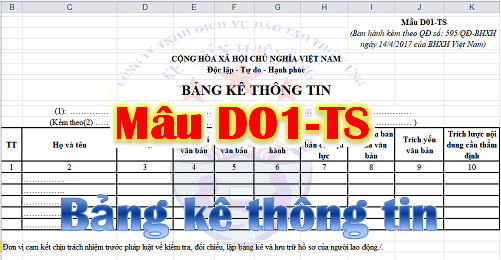

Mẫu D01-TS theo Quyết định 595/BHXH - Bảng kê thông tin BHXH. Hướng dẫn cách viết Bảng kê thông tin Mẫu D01-TS, trách nhiệm lập, thời gian lập và căn cứ lập Mẫu D01-TS.
Mục đích của Mẫu D01-TS: Tổng hợp hồ sơ, giấy tờ của đơn vị, người tham gia làm căn cứ:
- Truy thu BHXH, BHYT, BHTN, BHTNLĐ, BNN;
- Cấp lại, đổi, điều chỉnh nội dung đã ghi trên sổ BHXH, thẻ BHYT gửi kèm Danh sách lao động tham gia BHXH, BHYT, BHTN, BHTNLĐ, BNN (Mẫu D02-TS) hoặc Tờ khai tham gia BHXH, BHYT (Mẫu TK1-TS).
- Đơn vị có trách nhiệm lập. (Thời gian lập: khi có phát sinh).
---------------------------------------------------------------------------------------------
- Căn cứ lập: các loại giấy tờ theo mục 2 Phụ lục 01; Phụ lục 02; Phụ lục 03. Ghi rõ bản chính/ bản sao/ bản chứng thực của giấy tờ. Cụ thể như sau:|
2. Điều chỉnh làm nghề công việc nặng nhọc, độc hại, nguy hiểm hoặc đặc biệt nặng nhọc, độc hại, nguy hiểm - Hồ sơ gồm 1 trong các loại giấy tờ sau: Quyết định phân công vị trí công việc, hưởng lương; Hợp đồng lao động, Hợp đồng làm việc và các giấy tờ khác có liên quan đến việc điều chỉnh. 2. Bảng thanh toán tiền lương (hoặc bảng kê tiền lương, tiền công nếu trả qua ATM) tương ứng thời gian truy thu. 2. Thay đổi thông tin về nhân thân, bổ sung mã nơi đối tượng sinh sống trên thẻ BHYT, hồ sơ gồm một trong các loại giấy tờ sau:
|
--------------------------------------------------------------------------------------
Mẫu D01-TS Bảng kê thông tin và cách lập:
|
Mẫu D01-TS (Ban hành kèm theo QĐ số: 595/QĐ-BHXH ngày 14/4/2017 của BHXH Việt Nam) |
CỘNG HÒA XÃ HỘI CHỦ NGHĨA VIỆT NAM
Độc lập - Tự do - Hạnh phúc
----------------------------------------------
BẢNG KÊ THÔNG TIN
Độc lập - Tự do - Hạnh phúc
----------------------------------------------
BẢNG KÊ THÔNG TIN
(1): …………………………………………………………………
(Kèm theo(2) ……………………………………………………………… )
(Kèm theo(2) ……………………………………………………………… )
- Chỉ tiêu (1): ghi nội dung lập bảng kê (ví dụ: hồ sơ làm căn cứ truy thu BHXH, BHYT, BHTN, BHTNLĐ, BNN hoặc hồ sơ làm căn cứ điều chỉnh thông tin tham gia BHXH, BHYT, BHTN, BHTNLĐ, BNN).
- Chỉ tiêu (2): ghi bảng kê nộp kèm theo [ví dụ: kèm theo danh sách lao động tham gia BHXH, BHYT, BHTN, BHTNLĐ, BNN (Mẫu D02-TS) hoặc kèm theo tờ khai tham gia BHXH, BHYT (Mẫu TK1-TS)].
| TT | Họ và tên | Mã số BHXH | Tên, loại văn bản | Số hiệu văn bản | Ngày ban hành | Ngày văn bản có hiệu lực | Cơ quan ban hành văn bản | Trích yếu văn bản | Trích lược nội dung cần thẩm định |
| 1 | 2 | 3 | 4 | 5 | 6 | 7 | 8 | 9 | 10 |
| ghi số thứ tự | ghi họ tên người tham gia điều chỉnh | ghi mã số BHXH của người tham gia điều chỉnh | ghi tên, loại văn bản (Quyết định, HĐLĐ, Giấy xác nhận ...). | ghi số hiệu văn bản (99/QĐ-UBND, 88/LĐTBXH-NCC ...). | ghi ngày ban hành văn bản | ghi ngày văn bản có hiệu lực | ghi cơ quan ban hành văn bản (UBND huyện, tỉnh hoặc Sở, ngành ...; Công ty A ...). | ghi nội dung trích yếu văn bản (V/v tuyển dụng, điều động, tăng lương; xác nhận người có công với cách mạng ...) | Chi tiết xem bên dưới nhé |
| …………… | |||||||||
| …………… | |||||||||
| …………… | |||||||||
| …………… |
Đơn vị cam kết chịu trách nhiệm trước pháp luật về kiểm tra, đối chiếu, lập bảng kê và lưu trữ hồ sơ của người lao động./.
|
Ngày ……. tháng …… năm ……….. Thủ trưởng đơn vị (Ký, ghi rõ họ tên và đóng dấu) |
------------------------------------------------------------------------------------------------------
Cách ghi Cột 10: ghi một số thông tin được trích lược nêu trong giấy tờ để cơ quan BHXH có căn cứ thẩm định như:
+ Truy thu: ghi một số nội dung trong văn bản làm căn cứ truy thu.
+ Trường hợp điều chỉnh nội dung đã ghi trên sổ BHXH (điều chỉnh làm nghề hoặc công việc nặng nhọc, độc hại nguy hiểm hoặc đặc biệt nặng nhọc, độc hại nguy hiểm thuộc danh mục do Bộ Lao động - Thương binh và Xã hội, Bộ y tế ban hành): ghi rõ công việc, địa điểm làm việc; mức lương, phụ cấp lương, các khoản bổ sung hoặc bậc lương, hệ số lương, thời điểm hưởng lương của người lao động theo Quyết định phân công nghề, công việc hoặc Quyết định tiền lương hoặc HĐLĐ, HĐLV theo nghề hoặc công việc.
+ Cấp lại sổ BHXH do thay đổi họ, tên, chữ đệm; ngày, tháng, năm sinh; giới tính; quốc tịch:
Ghi rõ: họ tên; ngày tháng năm sinh; giới tính; quốc tịch của người tham gia được ghi trong Giấy khai sinh hoặc bản Trích lục khai sinh;
Ghi rõ: số chứng minh thư/thẻ căn cước/hộ chiếu; họ và tên, ngày tháng năm sinh của người tham gia được ghi trong chứng minh thư/thẻ căn cước/hộ chiếu.
Trường hợp là đảng viên ghi rõ: họ tên; ngày tháng năm sinh; ngày tháng năm khai lý lịch của người tham gia được ghi trong Lý lịch đảng viên.
+ Trường hợp được hưởng quyền lợi BHYT cao hơn:
Đối với người có công với cách mạng được cấp thẻ thương binh, thẻ bệnh binh, giấy chứng nhận người hưởng chính sách như thương binh: ghi rõ họ tên, ngày tháng năm sinh, tỷ lệ mất sức lao động của người có công với cách mạng được ghi trong thẻ; họ và tên, chức vụ của người ký cấp thẻ.
Đối với người có công với cách mạng được cấp Quyết định công nhận, Quyết định hưởng trợ cấp, Giấy xác nhận, Giấy chứng nhận, Huân chương, Huy chương... (viết tắt là văn bản): ghi rõ họ tên, ngày tháng năm sinh của người có công với cách mạng được nêu trong văn bản (nếu có); họ và tên, chức vụ của người ký văn bản.
Đối với cựu chiến binh theo Nghị định 150/2006/NĐ-CP ngày 12/12/2006 của Chính phủ (Nghị định số 157/2016/NĐ-CP ngày 24/11/2016 của Chính phủ sửa đổi, bổ sung Nghị định số 150/2006/NĐ-CP): ghi rõ tên Quyết định (là phục viên, xuất ngũ, chuyển ngành); ngày nhập ngũ; cấp bậc quân hàm (chuẩn úy, thiếu úy...); địa điểm nơi đóng quân của cựu chiến binh được nêu trong văn bản; họ và tên, cấp bậc của người ký văn bản (hoặc ký thẩm định văn bản).
Đối với cựu chiến binh là người trực tiếp tham gia kháng chiến được cấp Giấy chứng nhận, Giấy khen, Quyết định hưởng trợ cấp, Lý lịch (cán bộ, đảng viên): ghi rõ họ tên, ngày tháng năm sinh của cựu chiến binh được nêu văn bản; họ và tên, chức vụ của người ký văn bản.
Đối với người được hưởng quyền lợi cao hơn theo hộ gia đình (như: thân nhân người có công với cách mạng, hộ gia đình nghèo...) được cấp giấy chứng nhận, giấy xác nhận, sổ hộ khẩu, sổ tạm trú: ghi rõ họ tên của người có công với cách mạng (hoặc chủ hộ), họ và tên các thân nhân được ghi trong văn bản; họ và tên, chức vụ của người ký văn bản.
* Lưu ý: Trường hợp người tham gia không có giấy tờ nêu tại Phụ lục 02, Mục II, III Phụ lục 03 mà có giấy tờ khác chứng minh thì đơn vị nộp cho cơ quan BHXH để xem xét giải quyết, không ghi vào bảng kê này.
-----------------------------------------------------------------------------------
|
Tải Bảng kê thông tin Mẫu D01-TS về tại đây: - Nếu bạn muốn tải Mẫu D01-TS file Word: - Nếu bạn muốn tải Mẫu D01-TS file EXCEL: |
Nếu bạn không tải về được thì có thể làm theo cách sau:
Bước 1: Để lại mail ở phần bình luận bên dưới
Bước 2: Gửi yêu cầu vào mail: ketoandieutam@gmail.com (Tiêu đề ghi rõ Tài liệu muốn tải)
--------------------------------------------------------------------------------------------------
Xem thêm: Cách đăng ký tham gia BHXH
----------------------------------------------------------------------------------------------------
Xem thêm: Cách đăng ký tham gia BHXH
----------------------------------------------------------------------------------------------------
